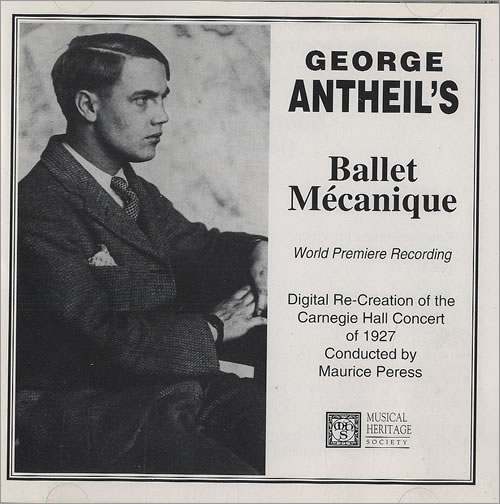

Sexo, Pianos y Redes Inalámbricas
Una actriz escandalosa
Una joven mujer, montada en su caballo, se interna en el bosque. Por unos instantes la perdemos de vista. A través de las ramas y follaje de los árboles la vemos reaparecer corriendo desnuda para zambullirse en un río.
Después la cámara nos muestra que las ropas de la joven están sobre el lomo del caballo. El animal pasta tranquilo hasta que una yegua se asoma por detrás de un cerco de madera unos metros más allá en un claro. El caballo relincha y corre hacia la yegua, dejando abandonada a nuestra protagonista.
Ella se da cuenta y grita llamando al animal, pero este no obedece. Desesperada nada hasta la orilla y esta vez la vemos correr desnuda, la cámara nos muestra su reflejo sobre el agua.
El corcel se ha acercado a la yegua, y cuando la muchacha los alcanza huye otra vez, corriendo hacia la orilla de un camino donde trabaja una cuadrilla de obreros. Los hombres espantan al animal, pero un trabajador joven corre persiguiendo al caballo hasta que lo detiene y tranquiliza.
La chica observa todo esto escondida detrás de un arbusto, y así es como el hombre la encuentra. Al principio ella trata de cubrirse y lo mira asustada, mientras él sonríe, finalmente ella decide mirarlo desafiante. El joven trabajador sonríe devolviéndole vestido y caballo.
Estas escenas son parte de la película de 1933, Éxtasis. La secuencia descrita es la que produce el encuentro de los amantes. La posterior escena, de su primer encuentro amoroso, tiene la particularidad de ser la primera en el cine en que se representa un orgasmo femenino (en una película no pornográfica).
Filmada en Checoslovaquia, tardó dos años en ser exhibida en Alemania, debido a la censura. En Estados Unidos fue condenada por diversas instituciones morales, incluyendo a la Iglesia Católica. En 1936 el distribuidor norteamericano de la película empezó los trámites para obtener el sello de aprobación del Código Hays, pero sin éxito. Recién en 1940 la película fue exhibida sin el sello Hays de forma privada en algunos casas culturales.
La protagonista era la hermosa joven austriaca Hedwig Kiesler, quien llegaría a alcanzar fama internacional más tarde en Hollywood bajo el nombre de Hedy Lamarr.
Hedy tenía dieciocho años cuando filmó Éxtasis. Aunque no era su primera película, fue esta la que la hizo famosa a escala mundial y le aseguró su llegada a la “Meca del Cine” años más tarde.
Al cumplir diecinueve Hedy contrajo matrimonio con Friedrich Mandl, un importante empresario austriaco propietario de grande fábricas de armamentos.
Mandl odiaba la película, pues sostenía que ésta explotaba a su mujer y la expresión de su rostro durante el orgasmo simulado. Compró tantas copias como pudo para impedir su exhibición pública. Después de casados, le prohibió a su mujer seguir la carrera artística y salir de su enorme mansión sin ser acompañada por él.
Sin embargo, el empresario usaba la belleza de su mujer como un medio de mejorar sus negocios, en especial con los gobiernos fascistas de Alemania e Italia. Se dice que la joven causó gran impresión sobre Adolf Hitler durante una cena. Otra anécdota asegura que Mussolinni guardaba una copia de Éxtasis, la que consideraba uno de sus bienes más preciados.
La joven empezó a acompañar a su esposo a reuniones de negocios y conferencias sobre armamento. Hedy era muy inteligente. Acostumbraba a dar largos paseos con su padre, un rico banquero vienés, conversando sobre ciencia y la naturaleza mecánica del mundo. Durante las conferencias de armamentos prestaba mucha atención y aprendió cómo funcionaban muchos de los mecanismos de las armas y municiones desarrolladas en las fábricas de su esposo.
Pero Hedy quería huir. No sólo el matrimonio era tortuoso para ella, además odiaba al régimen nazi, porque entre otras cosas sus padres eran judios. Un día convenció a su esposo de que le permitiera usar todas sus joyas durante una cena. Esa misma noche desapareció disfrazada como sirvienta.
Llegó a Paris, donde contactó a Louis B. Mayer y obtuvo un contrato para filmar películas para MGM, bajo la condición de que cambiara su nombre. Mayer quería de algún modo desviar la atención de la censura (hasta entonces ella era conocida en Estados Unidos como “the Ecstasy Lady”). Fue así como empezó una exitosa carrera en el cine norteamericano.
El hombre de los pianos
En junio de 1926 se realizó un exclusivo concierto privado en Paris. El evento correspondía al estreno de una curiosa obra de corte dadaísta, titulada “Ballet Mécanique”, que debía ser interpretada, entre otras cosas, por una pianola, ocho pianos de cola, varios yunques, y el motor de aeroplano.

La cacofonía del concierto desconcertó a los asistentes y varios de ellos salieron indignados del teatro, causando disturbios en la calle. La auspiciadora, una rica mujer norteamericana fue manteada por dos princesas, tres baronesas y un duque.
El autor de tan escandalosa obra era George Antheil, un joven pianista y compositor norteamericano de veintiséis años. Un lustro antes este joven músico había arribado a Europa con la intensión de convertirse en un afamado compositor y pianista ultra moderno. Logró un moderado éxito e incluso en algunos conciertos sus obras se tocaban junto a las de Stravinsky y Debussy.
Después del fiasco en Paris viajó a Alemania, donde logró estrenar su primera ópera en 1930. Pero su música vanguardista no fue bien recibida por los nazis y en plena depresión decidió retornar a su país natal. Antheil viajó a Hollywood donde escribió partituras para diversos realizadores, como Cecil B. DeMille, entre otros.
Aparte de la composición, Antheil escribió novelas de misterio, también trabajó como reportero y crítico para revistas de música. Antes de la Segunda Guerra Mundial participó en la Liga Anti Nazi de Hollywood exhibiendo obras de artes censuradas por la Alemania de Hitler.
Además escribía una columna de consejos para parejas, la que se distribuía en periódicos de a nivel nacional, junto con columnas regulares en revistas como Esquire y Coronet. Se consideraba a si mismo un experto en la “endocrinología femenina” y publicó una serie de artículos sobre “cómo determinar la disponibilidad de una mujer basado en los efectos glandulares en su apariencia”. Incluso llegó a escribir libros sobre el tema.
Fueron estos artículos y libros los que le permitieron conocer a Hedy Lamarr.
La estrella de Hollywood quería consejos del experto sobre como mejorar el atractivo de la parte superior de su torso. El pianista recomendó extractos glandulares. Luego la conversación derivó en otras materias, y en particular en los torpedos.
Torpedos
Los torpedos radio controlados fueron desarrollados a fines de la Primera Guerra Mundial. Pero su mecanismo de control y guía tenía varios fallos. Una contramedida efectiva era enviar una señal de interferencia en la misma frecuencia usada para dirigir el arma.
Lamarr conocía este efecto por su experiencia en las conferencias a las que había asistido acompañando a Mandl, su ex esposo. Cuando supo de los ataques de submarinos alemanes a barcos civiles, se obsesionó con encontrar un modo de apoyar a los norteamericanos con su ingenio y conocimientos sobre armamentos.
Hedy quería mejorar el mecanismo de control de los torpedos, y para esto concibió la idea de transmitir una señal de guía en ráfagas cortas a diferentes frecuencias. El código para la secuencia de frecuencias debía ser idéntico tanto en el barco de control como en el torpedo. Cómo la secuencia sería desconocida por el enemigo la transmisión no podría ser bloqueada inundando el espectro con ruido. Por otro lado el tratar de interferir todas las frecuencias posibles requeriría demasiada potencia.
La contribución de Antheil fue controlar el salto de frecuencia usando un mecanismo similar al de una pianola. El conocía muy bien como operaba pues había compuesto Ballet Mécanique para que fuera interpretado por ocho pianos sincronizados.
Concibieron el dispositivo para que la señal saltara entre 88 frecuencias, tal como las 88 teclas que hay en un piano. En 1941, Lamarr y Antheil firmaron la patente US2292387: “Secret Communication System”.

Aunque se hizo una presentación técnica a la marina de Estados Unidos el invento enfrentó oposición y fue rechazado. Hay que reconocer que la tecnología de ese tiempo no estaba preparada y recién en 1957 el concepto fue adoptado y probado en el bloqueo a Cuba de 1962.
Se sabe que Hedy Lamarr quería unirse al National Inventors Council, pero fue convencida de que podía aportar más vendiendo bonos de guerra.
Así que en 1942 recibe su linea más memorable “I am Tondelayo...” en la película White Cargo y se convierte en una de las chicas Pin Up favoritas de los combatientes en el pacífico.

Redes Inalámbricas
El invento de Lamarr y Antheil es la base para las técnicas de modulación de señales conocida como Spread Spectrum (espectro ensanchado).
Esta técnica ha sido usada en el estándar para comunicaciones móviles conocido como CDMA, del cual una variante, conocida como W-CDMA se usa en el protocolo 3G. Los mismos principios son aplicados en Bluetooth y en las redes WiFi.
La cuarta generación de redes inalámbricas, conocida como LTE, también está basada en el mismo principio, y gran parte de su velocidad de debe a que sus señales se esparcen por el espectro usando este cambio de frecuencias.
El legado tecnológico de Lamarr y Antheil sólo fue reconocido en 1997
cuando la Electronic Frontier Foundation le otorga el sexto premio
anual para los pioneros de la
tecnología.
Lamarr al enterarse exclamó “¡ya era hora!”, y envió a su hijo a
recibir el premio en su representación. Antheil falleció en 1959, así
que ni siquiera pudo ver la aplicación práctica de su idea.
Lamarr falleció el año 2000 en su casa en Florida. Es probable que sea más recordada por su espectacular belleza que por sus contribuciones tecnológicas. “Mi rostro ha sido mi desgracia”, dijo una vez, “es como una máscara que no puedo retirar. La maldigo”. Es probable que expresara de ese modo su frustración por no ser aceptada como algo más que una cara bonita, y no como una mujer con ideas originales y efectivas.